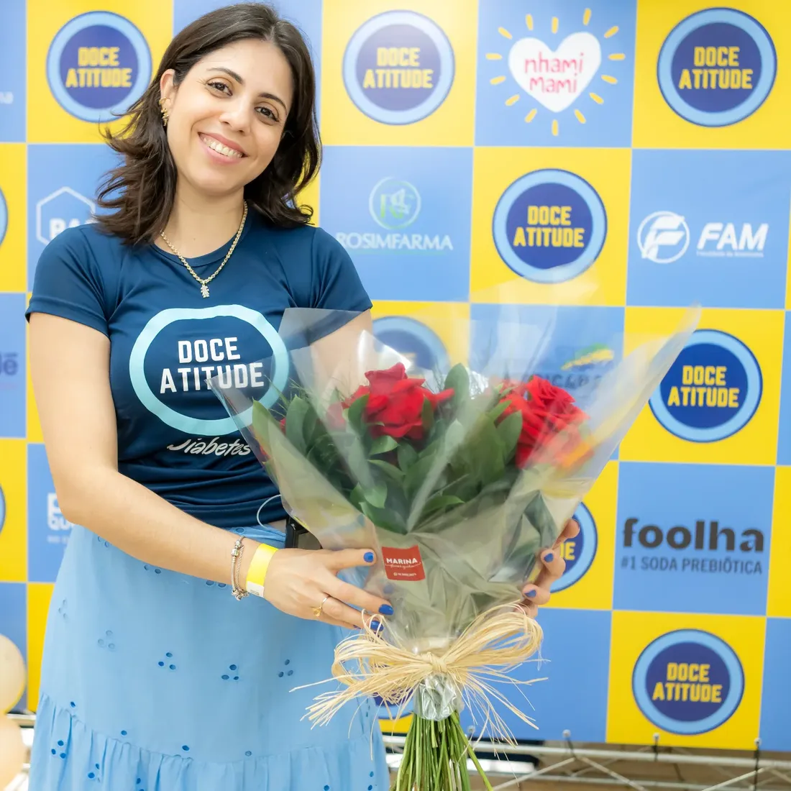

Em público

Doce Atitude 20267ª edição · 28 de novembro, das 9h às 17h, na FAM em Americana. Gratuito.
Sou nutricionista especialista em diabetes e convivo com o tipo 1 desde os 4 anos. Atendo em Americana, Sorocaba e online.
Agendar consultaConto carboidratos, troco sensor e acordo com hipoglicemia. Sei como é, porque é o meu dia também.
O diagnóstico veio em 20 de maio de 1990, quando eu tinha 4 anos. São 36 anos de insulina, contas e ajustes, e foi isso que me levou para a nutrição.
Sou nutricionista e educadora física, com pós em fisiologia. Junto o que a ciência mostra com o que eu vivo para montar um plano que caiba no seu dia.
Monte uma refeição e veja quantos gramas de carboidrato ela tem. É o primeiro passo da contagem que eu ensino na consulta.
Valores aproximados, calculados com a Tabela Brasileira de Composição de Alimentos (TACO, Unicamp). Na consulta, a contagem é feita com as suas porções, e a dose de insulina segue a orientação do seu médico.
Sua rotina, seus exames, o que você come de verdade e o que mais te preocupa hoje.
Depois, o sensor.
Se você usa sensor ou bomba, traga os relatórios. Os números mostram o que cada refeição faz com você.
Você aprende a contar.
Com as suas porções e os seus pratos, em casa, no restaurante e na festa.
E volta para ajustar.
Diabetes muda com a rotina, o treino e a idade. O plano muda junto.

Doce Atitude 20267ª edição · 28 de novembro, das 9h às 17h, na FAM em Americana. Gratuito.
| Ano | Evento | Onde | Papel |
|---|---|---|---|
| 2026 | Doce Atitude, 7ª edição | FAM, Americana | Diretora |
| 10 anos de FreeStyle Libre | Abbott | Speaker | |
| Monitoramento da glicose | Abbott | Speaker | |
| G7 Summit | Congresso | Participante | |
| Congresso da ANAD | São Paulo | Participante | |
| Dia Nacional do Diabetes | Câmara de Santa Bárbara d'Oeste | Convidada | |
| Americana em Pauta | Podcast ao vivo | Convidada | |
| 2024 | ATTD 2024 | Congresso internacional | Participante |
| 2021 | Doce Atitude | Americana | Fundadora |
Sim. A consulta online tem o mesmo cuidado da presencial: você manda os exames e os relatórios do sensor antes, e a gente conversa por vídeo.
Atendo em Americana e em Sorocaba. O endereço certo vai junto com a confirmação do horário, pelo WhatsApp.
Não. Se você usa sensor ou bomba, os relatórios ajudam muito. Se mede no dedo, traga o seu caderno ou o glicosímetro.
Sim. O tipo 1 é a minha vivência, mas o cuidado com a alimentação vale para todos os tipos e para quem está no pré-diabetes.
Não necessariamente. Quem sabe contar carboidratos sabe onde o doce cabe. A gente monta isso junto, sem terrorismo.
Não, é gratuito e aberto a pessoas com diabetes, famílias e profissionais. As inscrições ficam no Instagram do evento.
Me mande o seu nome, o tipo de diabetes e onde prefere ser atendida ou atendido. Eu respondo pessoalmente.